Context
The goal of this project was to reimagine the traditional campaign landing page into a more engaging, emotionally resonant digital experience that encourages users to participate, donate, and share.
A scroll-driven storytelling experience to increase engagement and drive participation
The goal of this project was to reimagine the traditional campaign landing page into a more engaging, emotionally resonant digital experience that encourages users to participate, donate, and share.

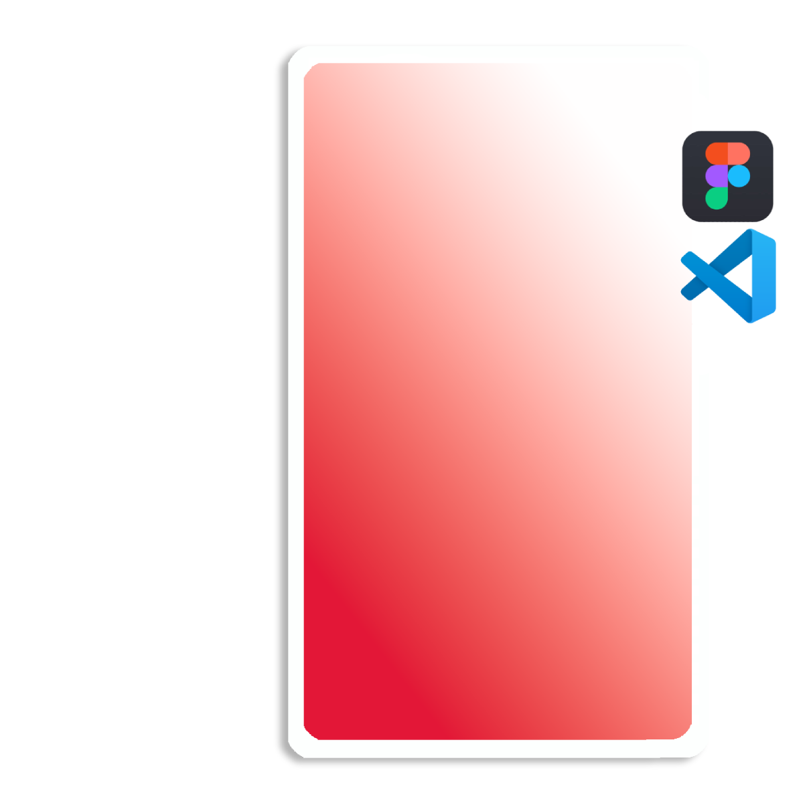
Many campaign pages rely on static layouts and dense information, making it difficult to capture attention or sustain engagement.
I designed a horizontally scrolling landing experience that mirrors the journey of a run—progressive, continuous, and purpose-driven. The concept reframes the page as a guided story, where users move through moments of awareness, impact, and participation.
Sans-serif
Hero Heading
Bold 56px
Sans-serif
Section Heading
Bold 38px
Inter
Body text
Regular 36px
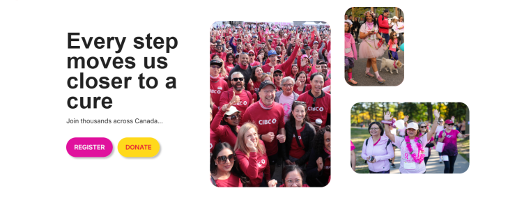
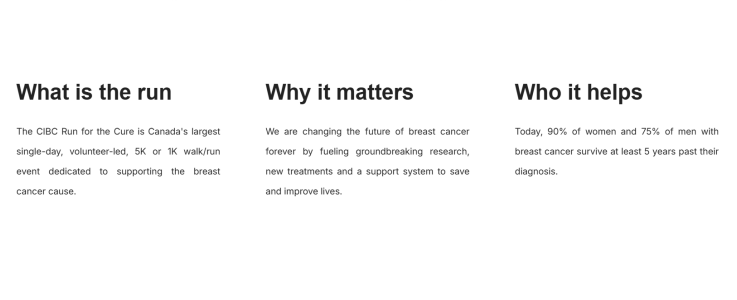
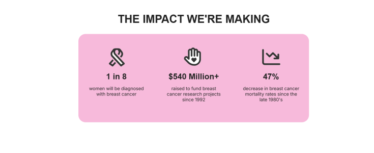
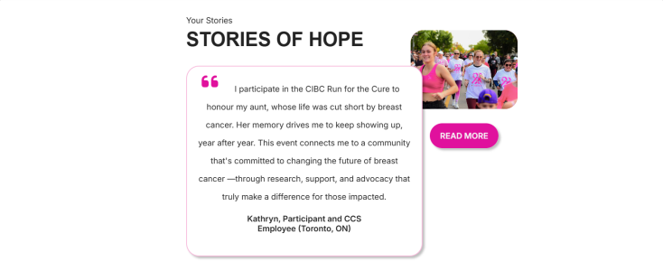
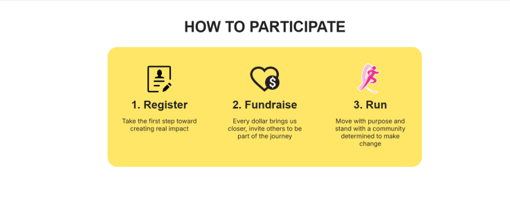
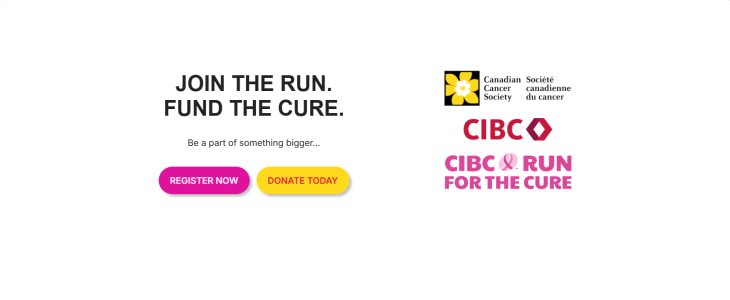
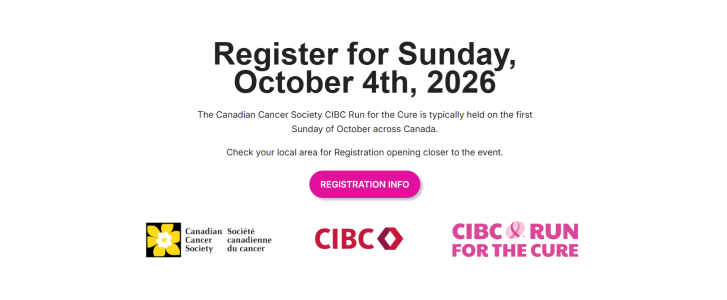
AI tools were integrated throughout the design process to accelerate ideation and iteration.
CHATGPT PROMPT: 'sketch figma wireframe layout (section by section)'
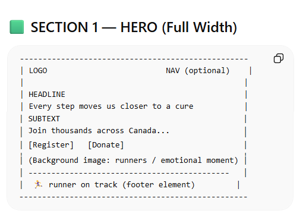
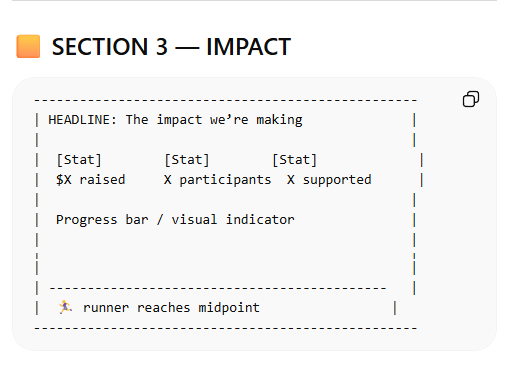
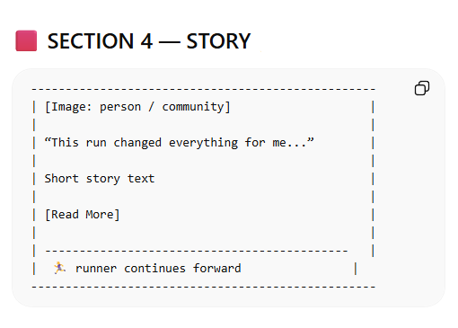
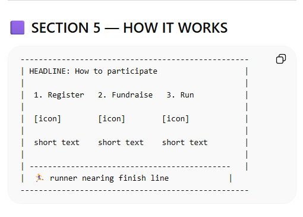
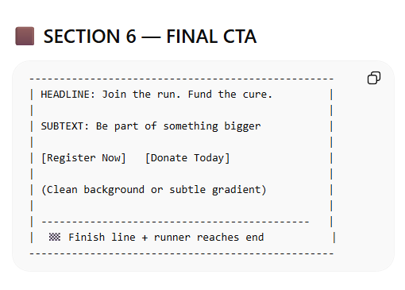
The final concept demonstrates how interactive storytelling can transform a traditional campaign page into a more engaging, action-driven experience - reinforcing the importance of designing motion with purpose to support the narrative and guide user behavior. View Campaign Experience
With further development, the experience could be expanded through: